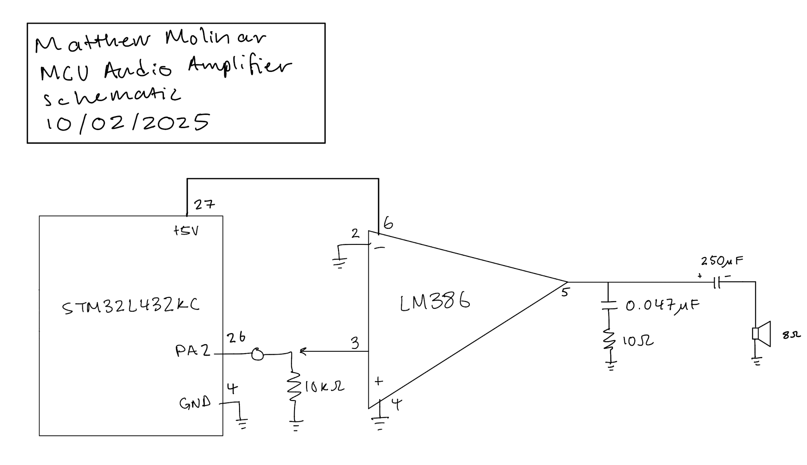

Lab 4: Digital Audio
Introduction
In this lab, I used an MCU to play music. I used timers to generate square waves by toggling a GPIO pin at specific frequencies for specified periods of time.
Design and Testing Methodology
Design Methodology
This design uses two timers to handle setting new frequencies and to specify duration time separately. The TIM15 timer is used to handle setting frequencies by setting it to PWM mode. The TIM16 timer is used to handle the duration of each note by setting it in upcounting mode. Finally, this design uses the PLL clock at 80 MHz, thus the prescaler and auto reload registers are adjusted accordingly to ensure an accurate frequency is being outputted.
As far as hardware goes, the design uses an LM386 audio amplifier, an op-amp circuit with a potentiometer for volume control, and an 8 Ω speaker.
Testing Methodology
Testing this design was done via hardware verification. The speaker was plugged into the circuit, and I ensured the correct notes were playing from the speaker.
Technical Documentation:
The source code for the project can be found in the associated GitHub repository.
Schematic
(Figure 1: Schematic of physical layout)
Figure 1 shows the physical layout of the design. The MCU was connected to an op-amp circuit which drove an 8 Ω speaker to play music.
Min/Max Calculations
All necessary calculations to get accurate duration time and frequency were done using the following equation. PSC and ARR have to be within 16 bits (2^16). For both timers, I hard set PSC, while ARR was dynamic.
\[ f_{\text{out}} = \frac{f_{\text{CLK}}}{(PSC+1)(ARR+1)} \]
Rearanging to solve for ARR: \[ ARR = \frac{f_{\text{CLK}}}{(PSC+1)(f_{\text{out}})} - 1 \]
PWM Mode (TIM15)
Minimum frequency when ARR = 2^16 -> 203.45 Hz Maximum frequency when ARR = 0 -> 13.3 MHz
Upcounting Mode (TIM16)
Minimum duration when ARR = 0 -> 8.8 ns Maximum duration when ARR = 2^16 -> 574.3 ms
Individual Pitch and Duration Accuracy
| Note | PSC | ARR | frequency_expected [Hz] | actual frequency [Hz] | error [%] |
|---|---|---|---|---|---|
| A3 | 5 | 60605 | 220.0 | 220.00022 | 1.000001e-06 |
| A3 sharp / B3 flat | 5 | 57199 | 233.1 | 233.1002331 | 1.000001e-06 |
| B3 | 5 | 54001 | 246.9 | 246.9044356 | 1.796532275e-05 |
| C4 (middle C) | 5 | 50967 | 261.6 | 261.602051 | 7.840061466e-06 |
| C4 sharp / D4 flat | 5 | 48099 | 277.2 | 277.2002772 | 1.000001e-06 |
| D4 | 5 | 45396 | 293.7 | 293.7051641 | 1.758280915e-05 |
| D4 sharp / E4 flat | 5 | 42857 | 311.1 | 311.104889 | 1.571524696e-05 |
| E4 | 5 | 40452 | 329.6 | 329.6006065 | 1.840003386e-06 |
| F4 | 5 | 38181 | 349.2 | 349.2046863 | 1.34201801e-05 |
| F4 sharp / G4 flat | 5 | 36035 | 370.0 | 370.00037 | 1.000001e-06 |
| G4 | 5 | 34012 | 392.0 | 392.0069777 | 1.780031685e-05 |
| G4 sharp / A4 flat | 5 | 32104 | 415.3 | 415.3039506 | 9.512590488e-06 |
| A4 | 5 | 30302 | 440.0 | 440.00044 | 1.000001e-06 |
| A4 sharp / B4 flat | 5 | 28599 | 466.2 | 466.2004662 | 1.000001e-06 |
| B4 | 5 | 26995 | 493.9 | 493.9003309 | 6.700004489e-07 |
| C5 | 5 | 25478 | 523.3 | 523.3067755 | 1.294766764e-05 |
| C5 sharp / D5 flat | 5 | 24049 | 554.4 | 554.4005544 | 1.000001e-06 |
| D5 | 5 | 22701 | 587.3 | 587.3197662 | 3.36561327e-05 |
| D5 sharp / E5 flat | 5 | 21428 | 622.2 | 622.209778 | 1.571524696e-05 |
| E5 | 5 | 20225 | 659.2 | 659.2175088 | 2.656070545e-05 |
| F5 | 5 | 19090 | 698.4 | 698.4093727 | 1.34201801e-05 |
| F5 sharp / G5 flat | 5 | 17995 | 740.9 | 740.9053864 | 7.270052853e-06 |
| G5 | 5 | 17005 | 784.0 | 784.0370065 | 4.720222795e-05 |
| G5 sharp / A5 flat | 5 | 16051 | 830.6 | 830.6337736 | 4.06616533e-05 |
| A5 | 5 | 15150 | 880.0 | 880.029921 | 3.400115604e-05 |
| Minimum Frequency | 5 | 65536 | - | 203.4474165 | - |
| Maximum Frequency | 5 | 0 | - | 13333333.33 | - |
| Note Type | PSC | ARR | duration_expected [ms] | actual duration [ms] | error [%] |
|---|---|---|---|---|---|
| Whole | 700 | 57060 | 500.0 | 499.9970125 | 5.975e-06 |
| Half | 700 | 28529 | 250.0 | 249.994125 | 2.35e-05 |
| Quarter | 700 | 14264 | 125.0 | 124.9970625 | 2.35e-05 |
| Eighth | 700 | 7131 | 62.5 | 62.49415 | 9.36e-05 |
| Sixteenth | 700 | 3565 | 31.25 | 31.247075 | 9.36e-05 |
| Minimum Duration | 700 | 0 | - | 0.0087625 | - |
| Maximum Duration | 700 | 65536 | - | 574.2679625 | - |
Results and Discussion
Hardware
The correct notes were being play from the speaker and volume was controllable using a potentiometer. First, I was able to play Für Elise, then I played Twinkle Twinkle Little Star.
Hardware Demo
Conclusion
This design sucessfully used timers and toggled a GPIO pin on an MCU to play music. Additionally, volume was controllable by adjusting a potentiometer. I spent a total of 25 hours on this lab, mostly because I was running into a lot of issues with SEGGER on my laptop.
AI Prototype Summary
For the following AI Prototype, I will be using ChatGPT.
Prompt
What timers should I use on the STM32L432KC to generate frequencies ranging from 220Hz to 1kHz? What’s the best choice of timer if I want to easily connect it to a GPIO pin? What formulae are relevant, and what registers need to be set to configure them properly?
Response
According to ChatGPT, the best timer to use is TIM2 because it has “large flexibility” with “less math headache”. ChatGPT did also say TIM15-TIM17 are also viable options becuase they are lightweight (only 16-bits) and they connect to GPIO alternate functions. Furthmore ChatGPT provided the equation for how PWM frequency should be set which I found to be accurate.
Generated Code
The code generated for these prompts can be found here.
Reflection
I think the quality of the output was extremely highly, especially given the fact that it had no reference manual for the MCU as context at first. I think the reference manual would help with actually producing more functional code, but for just getting the high (and even some low) level ideas, ChatGPT seems to do good without. The speed and quality of the LLM is much faster than my own read of the reference manual. I can see how it can point me torwards the right sections when Ctrl+F can’t, but I would still have to find the actual pages myself. The LLM didn’t generate any code for me, but after I prompted it to do so, it opted to use timer 2. I found this choice bizarre because it is somehow “easier” math-wise. Furthermore, ChatGPT even acknowledge the fact that other timers are more light weight, which in my opinion would be more practical in the real world. Finally, I think that LLM’s are significantly better at document searching and generating these higher level ideas that acting as an HDL generator as demonstrated in previous prototypes. I think this is mostly the case because I feel like LLM’s are generally better at searching for information than generating code and creating logic.